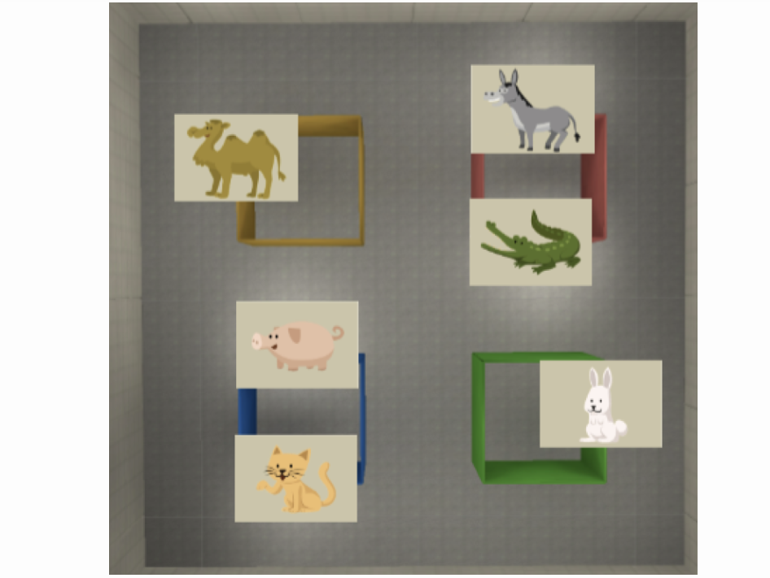
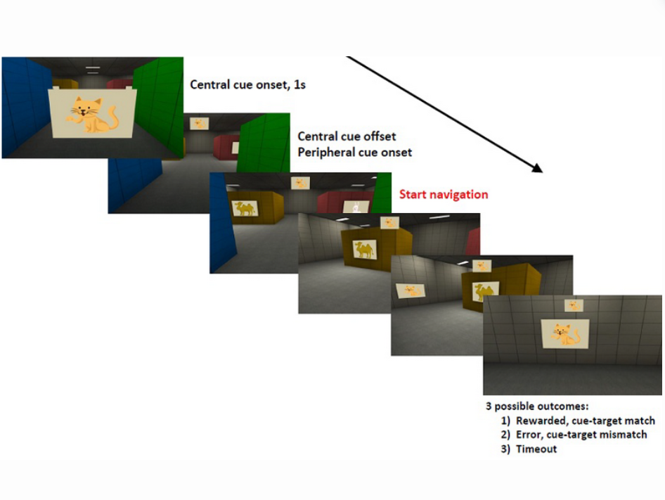
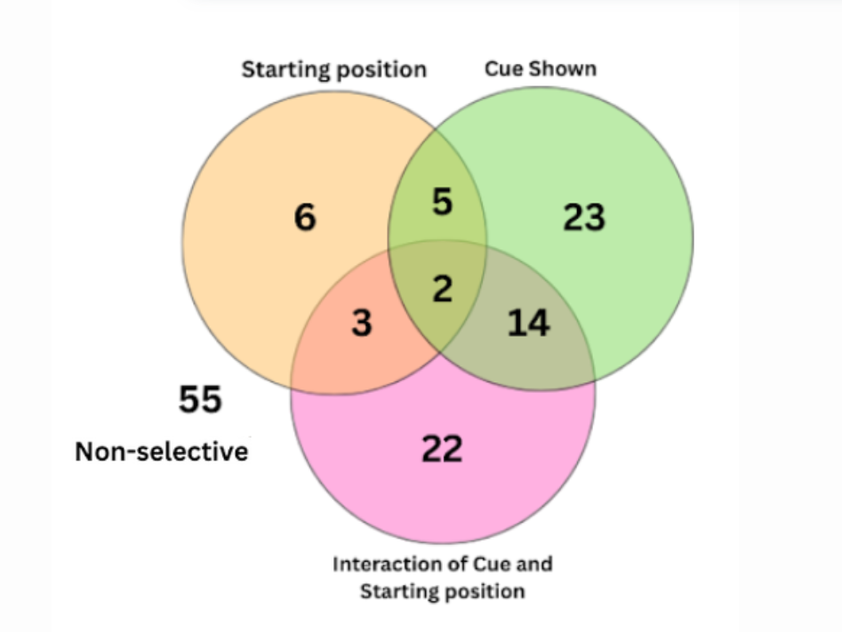
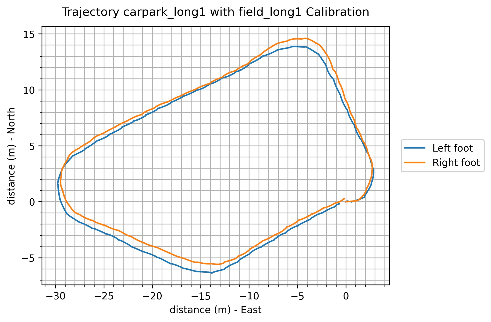
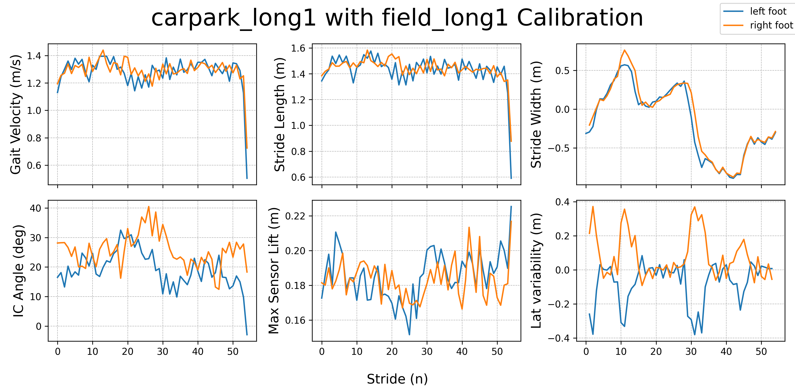

Hippocampal Theta for Spatial Memory Recall in a Virtual Maze
Non-human primateHippocampal LFPTheta power & peakSpatial memory
I analyse hippocampal theta-band activity in a
macaque performing a joystick-controlled virtual maze task. The
focus is the 1 s cue / path-planning period when
a visual poster cue indicates the goal location, the monkey
recalls its position relative to coloured pillars, and only then
starts to move.
Key questions
Does hippocampal theta power during the 1 s cue / planning
period differ from a control inter-trial baseline?
Is total theta power more strongly
modulated by goal-directed visual cues (poster identity /
cue pillar) than by spatial context (starting position /
pillar)?
Does theta peak power show
interaction-driven selectivity that binds “what” (goal cue)
and “where” (spatial context) information?
Approach
Joystick-based 3D virtual maze in Unity with
6 fixed goal posters on
4 coloured pillars; a trained macaque
performs 400 trials per session across 5 days while we
record hippocampal LFP, eye-tracking, and virtual position.
Extract 1 s cue-locked segments and
matching control segments from 26 hippocampal channels;
compute PSDs (Welch) and use FOOOF to
separate aperiodic background from oscillatory peaks,
yielding trial-wise total theta power and
theta peak power.
Run channel-wise t-tests (cue vs. control) and
two-way ANOVAs over factor pairs (starting
position / pillar × cue poster / pillar) to test whether
theta encodes goal identity, spatial context, or their
interaction.



@NUS iHealthtech
Robust Foot-Mounted IMU Trajectory Estimation
Wearable gait9-axis IMURTS-ESKFZUPT
We designed a custom
insole-embedded 9-axis IMU and a full algorithmic
pipeline to reconstruct walking trajectories and spatiotemporal
gait parameters from the feet, then validated against a
Movella MVN Awinda system on a 400 m track.
Pipeline
Hardware: foam insole with removable IMU module (BMI270 +
BMM350), ankle-mounted ESP32 data logger (100 Hz).
Preprocessing: accelerometer/gyro calibration,
hard/soft-iron magnetometer compensation, alignment into an
NWU global frame.
Gait events: stance / swing detection using Tunca et al. 's
event detector to segment strides and detect ZUPT phases.
Trajectory: VQF for orientation + ZUPT-aided error-state
Kalman filter with RTS smoothing for
drift-robust foot paths and velocity.
Validation & outcomes
Real-world walking trials (straight + curved) on a running
track, synchronized with MVN Gait Report.
Bland–Altman and correlation analysis for gait velocity,
stride length/time, stance and swing time across trials.
Demonstrated that a simple insole IMU system can approach
the trajectory and gait parameter accuracy of a gold
standard system in the field.


@EPFL TNE Lab
Active vs Passive Touch with EEG
EEGERPICA preprocessingVirtual interaction
This project asks how the brain differentiates between
self-generated touch (moving your own hand) and
externally generated touch (the object comes to
you) in a controlled virtual environment, with and without
additional tactile feedback or vision.
Task design
Participants either moved their hand toward a virtual object
(active touch) or experienced the object
moving toward their hand (passive touch).
Manipulation of vision and
tactile feedback (with vs without) to
separate visual, motor, and somatosensory contributions.
Time-locked EEG epochs around contact onset to study
event-related potentials (ERPs).
EEG analysis
Standard preprocessing with band-pass filtering and
ICA-based artifact removal (eye-blinks,
muscle activity).
ERP comparison between active vs passive touch and between
feedback conditions, focusing on early sensory components vs
later cognitive components.